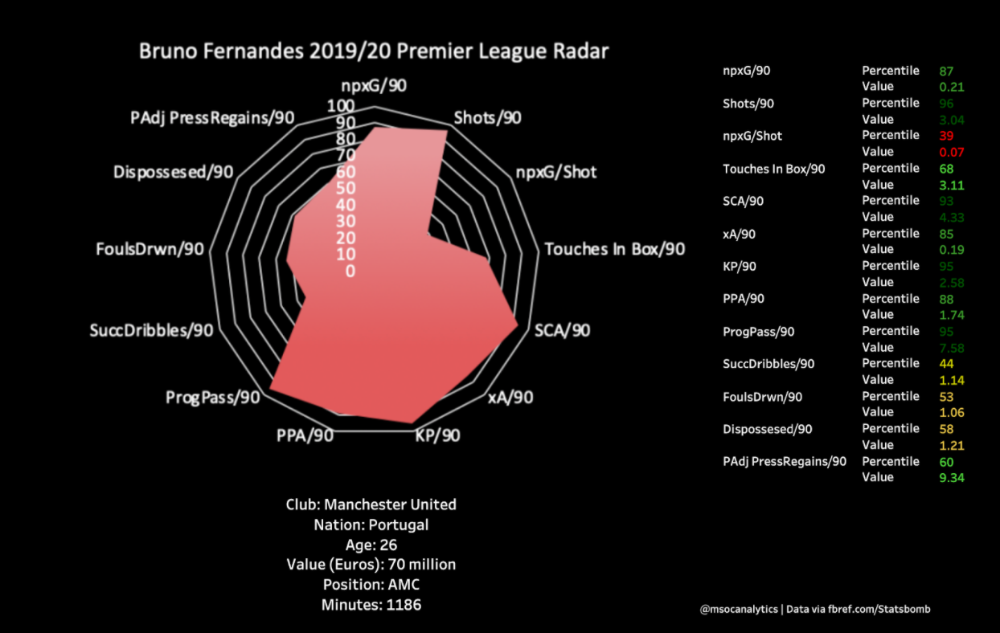

Note: All Data Was Taken From fbref.com/Statsbomb, Does Not Include The Spurs Match This Past Weekend.
Since Bruno Fernandes was brought in from Sporting Lisbon last January, Manchester United have lost just three games (and only one in the league). Bruno has been one of the rare recent big signings for Manchester United that has integrated and performed at a high level immediately, but has Ole Gunnar Solskjaer’s team really improved as much as it seems just from the introduction of one player? And what has Bruno Fernandes brought that has seemingly improved their results to this degree? Let’s dig into some data to see what we can find:
A Closer Look At Bruno:
So what does Bruno Fernandes bring to Manchester United? Well, if we look at his radar below, when compared with all Premier League midfielders with 900+ minutes, he ranks very high in chance creation metrics - being above the 85th percentile in five metrics and 95th in key passes and progressive passes. Bruno uses his fantastic passing range to progress the ball by dropping deeper into midfield and either spraying the ball out wide to the fullbacks pushing up into the final third or playing the ball over the top of the defense to the quick forwards Marcus Rashford, Anthony Martial, and Mason Greenwood. His passing also makes him an excellent option on set pieces, creating 0.23 goals per 90 from dead ball situations (the third most in the league) and 0.91 shots per 90 (the 17th most in the league).

Bruno Fernandes’s shooting is also a big asset for Manchester United, albeit not in the way you might think. Though he scored ten goals in the league since joining, six of them have been penalties. While it is an asset to have a penalty taker as good as Bruno in the team - he’s scored a perfect 25/25 in his career, which may not seem that impressive until you remember penalties are on average only converted at about a 75% rate - from open play, his shooting serves another purpose. Bruno typically takes low percentage shots from outside the box (evidenced by his 0.07 xG/Shot), and while he will occasionally score these, they mainly function as a way to draw defenders out and create space in the box for the three forwards I mentioned above. This has been very helpful against teams that like to sit in a low-block - teams that Manchester United struggled with pre-Bruno last year - because it opens up space to pass into or, if no one comes out to cover, gives Bruno a lot of open space to shoot.
Has Manchester United Improved?
Despite the upturn in results and the upgrade in individual talent brought with the introduction of Bruno Fernandes, have Manchester United’s performance levels actually improved? If we look at a time plot of the team’s expected goals, expected goals against, and a five week rolling average expected goal difference, we can see a short rise in xGD right after the introduction of Bruno (MW 30 would be the first week where the xGD is all Bruno games), but post-restart their form collapses, reaching its lowest point during this span in the second week of this new season. As we can see, while their xG remains at about the same level, their xGA begins to rise quite a lot, to the point where they are now consistently getting beat on expected goals. This is a worrying trend, and one that might not be totally apparent just looking at the results. But why did Manchester United’s form tank despite the introduction of a great talent in Bruno and the return of their most talented player in Paul Pogba?
What Manchester United gain offensively by having both Bruno and Pogba in the team, is unfortunately not enough to overcome what they lose defensively by fielding both of them. While Bruno and Pogba both provide better ball progression than Pereira and Fred, their chance creation metrics are only marginally better. In fact, while Bruno does have significantly more key passes per 90 than Andreas Pereira (2.58 to 1.88), his expected assists per 90 is actually less (0.19 to 0.23). This would suggest that while Bruno does create more chances, the chances he is creating are not necessarily better, and that might explain why Manchester United’s expected goal numbers remain fairly consistent despite Bruno and Pogba coming into the team.
Their downturn in defensive form might be explained by the amount of defensive work that the new guys put in relative to the old. Bruno and Pogba combine for 32 pressures per 90, way less than Fred and Pereira’s 55.5 per 90. By doing less work on the defensive end, it has likely led to the defense being exposed as an immobile 32-year-old Nemanja Matic has been forced to cover way more ground than he is able to. This forces Manchester United’s defenders into way more 1-on-1 situations, which has caused a lot more individual mistakes and allows for better chances for the opposition.
Conclusion:
There are aspects of Manchester United’s game that have improved since the introduction of Bruno Fernandes. They are more of a threat in possession, which has helped in breaking down deep-sitting opponents. They have also found a reliable penalty taker, which Rashford and Pogba could not always be. However, the introduction of Bruno Fernandes playing alongside Paul Pogba has messed with Manchester United’s defensive structure which, coupled with the stagnation of their attacking form, has seen their overall form nosedive post-restart. Overall, Bruno Fernandes has not been “the answer” to United’s woes as some fans may have you believe. Though he has been excellent, Manchester United still need a few more pieces before they are ready to rejoin Europe’s elite.